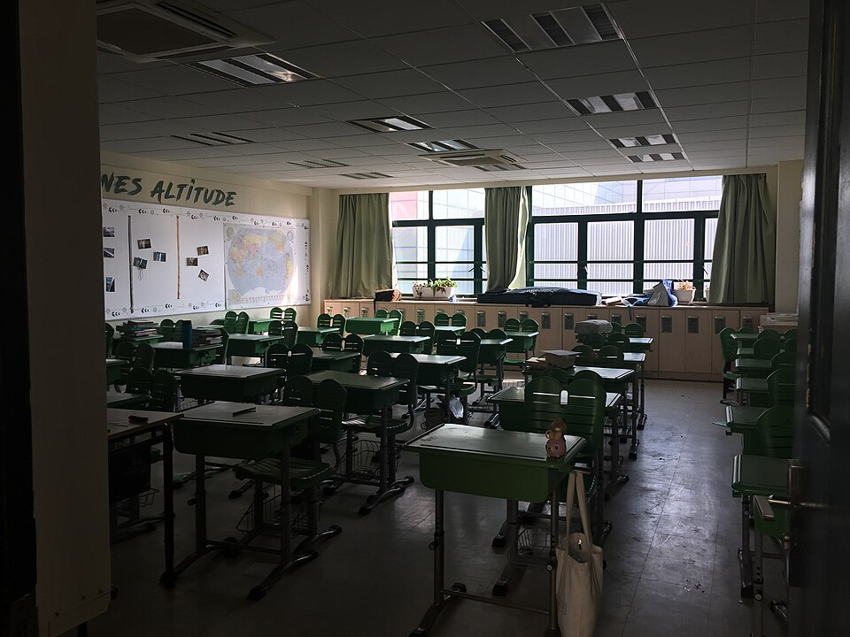

중등 교실 (이미지) · 사진: Ceo of marco / Wikimedia Commons, CC BY-SA 4.0
국제학교에는 담임이 없다? 어드바이저(Advisory·Form Tutor) — 누구에게 연락해야 하나
1. 한국의 담임과 무엇이 다른가
초등은 비슷합니다. 한 교실을 맡는 담임 교사가 있고, 아이의 하루를 대체로 그 선생님이 봅니다. 달라지는 것은 중등부터입니다. 과목마다 교사가 바뀌면서, 아이의 하루 전체를 보는 사람이 사라집니다.
그 빈자리를 메우려고 학교들은 별도의 역할을 지정합니다. 이름이 학교마다 다릅니다. 어드바이저(Advisor)·폼 튜터(Form Tutor)·홈룸 교사(Homeroom Teacher)·멘토(Mentor) 같은 말이 쓰이고, 그 시간을 어드바이저리(Advisory)·튜터 타임·홈룸이라고 부릅니다. 부르는 이름은 달라도 하는 일은 비슷합니다.
| 항목 | 한국 학교(담임) | 국제학교 중등(어드바이저) |
|---|---|---|
| 수업을 가르치나 | 보통 한 과목을 가르침 | 가르치지만 내 아이를 안 가르칠 수도 있음 |
| 성적을 매기나 | 자기 과목을 매김 | 과목 성적은 각 과목 교사가 매김 |
| 무엇을 보나 | 학급 전반 | 여러 과목에서 올라온 이야기를 모아서 봄 |
| 바뀌는 주기 | 보통 1년 | 학교에 따라 여러 해 같은 선생님이기도 함 |
| 위에 누가 있나 | 학년부장 | 학년 책임자 또는 하우스(House) 책임자 |
| 진학 상담 | 담임이 상당 부분 담당 | 진학 카운슬러가 따로 있음 |
표의 두 번째 줄이 가장 중요합니다. 어드바이저에게 "수학 점수가 왜 이런가요"를 물으면 정확한 답이 나오지 않습니다. 그 답은 수학 교사가 가지고 있습니다. 어드바이저는 흩어진 이야기를 모아 보고 필요한 곳으로 연결해 주는 사람에 가깝습니다.
2. 누구에게 무엇을 묻나 — 네 갈래
학교마다 조직은 다르지만, 대체로 네 갈래로 나뉩니다. 여기만 구분하셔도 메일이 헤매지 않습니다.
| 누구 | 이런 일을 묻습니다 |
|---|---|
| 과목 교사 | 그 과목 점수·과제 기준·어디서 틀렸는지·보충 자료 |
| 어드바이저(폼 튜터) | 여러 과목에 걸친 문제·생활·친구 관계·전반적인 적응 |
| 학년·하우스 책임자 | 학년 전체 규정·징계·결석 승인·답이 오지 않을 때 |
| 진학 카운슬러 | 과목 조합·대학 지원·추천서·시험 일정 (→ 카운슬러 활용법) |
여기에 영어 지원(EAL)과 학습 지원(Learning Support) 부서가 따로 있는 학교도 많습니다. 둘은 서로 다른 부서이고 대상도 다릅니다. 그 차이는 학습 지원(Learning Support)과 EAL 안내에 정리해 두었습니다.
3. 연락 창구를 모르면 생기는 손해 다섯 가지
· ① 묻기를 미룹니다. "누구에게 물어야 할지 몰라서" 미루다가 성적표가 나온 뒤에 아십니다. 그때는 이미 한 학기입니다.
· ② 엉뚱한 곳에 묻습니다. 과목 질문을 어드바이저에게 보내면 전달되는 데 며칠이 걸리고, 답도 뭉뚱그려집니다.
· ③ 아이 말만 듣고 판단합니다. 아이는 "괜찮다"고 합니다. 교사 쪽에 물어보면 전혀 다른 그림이 나오는 경우가 많습니다.
· ④ 어드바이저에게 올라가지 않습니다. 과목 교사 한 명에게만 말하면 그 선생님만 압니다. 여러 과목에 걸친 문제는 어드바이저가 모아야 학교가 움직입니다.
· ⑤ 상담 때 처음 꺼냅니다. 정기 상담은 시간이 짧습니다. 거기서 처음 말씀하시면 그날은 설명을 듣는 것으로 끝납니다. → 학부모 상담 준비법
4. 메일 쓰는 법 — 다섯 줄이면 충분합니다
영어가 부담스러워 연락을 미루시는 분이 정말 많습니다. 그런데 완벽한 영어보다 제때 보낸 짧은 메일이 훨씬 낫습니다. 국제학교 교사들은 영어가 모국어가 아닌 학부모와 늘 소통합니다. 문법이 아니라 내용이 분명한지를 봅니다.
· 제목 — 아이 이름과 학년을 넣습니다. 예: "Question about Year 8 Mathematics — [아이 이름]"
· ① 무엇을 보고 걱정하게 되었는지 한 줄
· ② 집에서 관찰한 것 한 가지 (숙제 시간이 길어졌다, 특정 과목만 미룬다 등)
· ③ 무엇을 알고 싶은지 구체적으로 — "어디서 막히는지 알려 주실 수 있나요"
· ④ 답장 받고 싶은 방식 (메일·짧은 통화·면담)
📌 원인을 추측해 길게 쓰지 마세요. "아이가 영어가 부족해서인 것 같은데…"로 시작하면, 교사도 그 틀 안에서 답하게 됩니다. "어디서 막히는지 알려 주세요"가 훨씬 쓸모 있는 답을 불러옵니다.
답이 며칠 안에 오지 않으면 같은 메일에 이어서 한 번 더 보내시고, 그래도 없으면 학년·하우스 책임자를 참조로 걸어 보내시면 됩니다. 재촉이 아니라 정상적인 절차입니다. 또 많은 학교가 통역·번역 지원이나 같은 언어를 쓰는 학부모 연락 담당을 두고 있습니다. 있는지 물어보시는 것 자체가 전혀 실례가 아닙니다.
5. 하우스(House) 제도가 있는 학교라면
영국식 학교에는 하우스라는 구조가 있는 경우가 많습니다. 학년과 상관없이 학생을 여러 하우스로 나누고, 하우스마다 담당 교사와 책임자를 둡니다. 운동회·대회·봉사 활동이 하우스 단위로 돌아가기도 합니다.
학부모 입장에서 알아 두실 점은 하나입니다. 담당자가 두 줄로 존재합니다. 과목 쪽 줄(과목 교사 → 교과 책임자)과 생활 쪽 줄(하우스 담당 교사 → 하우스 책임자)입니다. 그래서 성적 이야기와 생활 이야기의 연락처가 다릅니다. 학기 초에 두 쪽 이름을 모두 적어 두시면 나중에 헤매지 않습니다.
6. 학기 초에 해 둘 네 가지
· 1단계 — 이름과 이메일을 적어 둡니다. 어드바이저(폼 튜터), 학년·하우스 책임자, 주요 과목 교사. 학기 초 안내문이나 학교 시스템에 있습니다. → 학습 플랫폼·시간표 읽는 법
· 2단계 — 어드바이저에게 짧게 한 번 인사 메일을 보냅니다. 문제가 생긴 뒤 첫 연락이 되지 않도록, 아무 일 없을 때 한 번 연결해 두는 것이 좋습니다.
· 3단계 — 어드바이저리 시간이 언제인지 확인합니다. 그 시간에 무엇을 하는지(학습 점검·과제 계획·생활 지도)는 학교마다 다릅니다.
· 4단계 — 정기 상담 일정을 달력에 먼저 넣습니다. 상담 전에 과목별로 묻고 싶은 것을 한 줄씩 적어 두세요. → 학부모 상담 준비법
📌 과외를 붙이실 계획이라면 어드바이저에게 받은 코멘트를 그대로 가져오시는 편이 좋습니다. "수학이 약하다"는 말보다 "설명 단계에서 점수를 잃는다" 같은 한 줄이 수업 설계를 바꿉니다. 학교가 본 것과 집에서 보는 것을 맞춰 보는 자리가 있어야 같은 이야기를 두 번 하지 않습니다.
관련 검색어: 국제학교담임 · 국제학교어드바이저 · 국제학교선생님연락 · 국제학교학부모상담 · 국제학교영어과외
정리
국제학교 중등에는 한국식 담임이 그대로 있지 않습니다. 대신 과목 교사 · 어드바이저(폼 튜터) · 학년·하우스 책임자 · 진학 카운슬러로 역할이 나뉩니다. 한 과목 문제는 과목 교사에게, 여러 과목에 걸친 문제는 어드바이저에게 — 이 한 줄만 기억하셔도 메일이 헤매지 않습니다. 영어는 완벽할 필요가 없고, 다섯 줄짜리 메일을 제때 보내는 쪽이 훨씬 효과적입니다. 학기 초에 이름과 이메일을 적어 두시고, 아무 일 없을 때 한 번 연결해 두세요. 학교에서 들은 코멘트를 어떻게 공부로 옮길지 막막하시다면 30분 무료 수업으로 함께 정리해 보실 수 있습니다. (역할 이름과 조직 구성은 학교마다 다르니 반드시 학교 안내를 직접 확인하세요.)